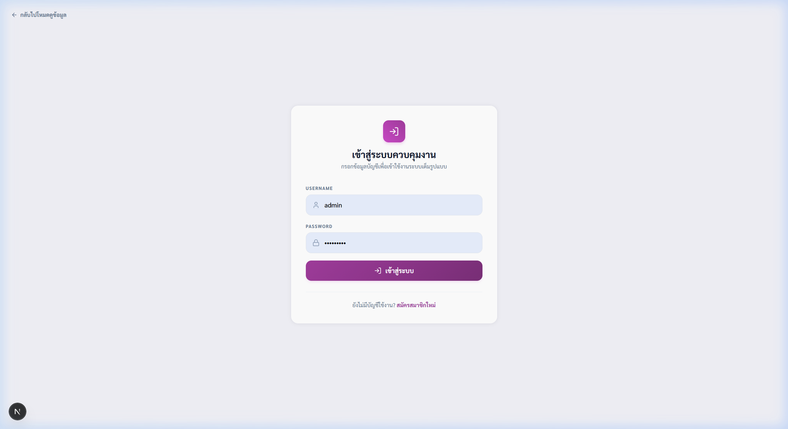
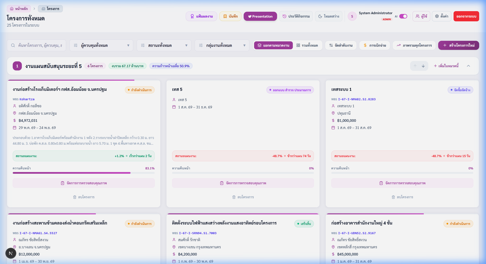
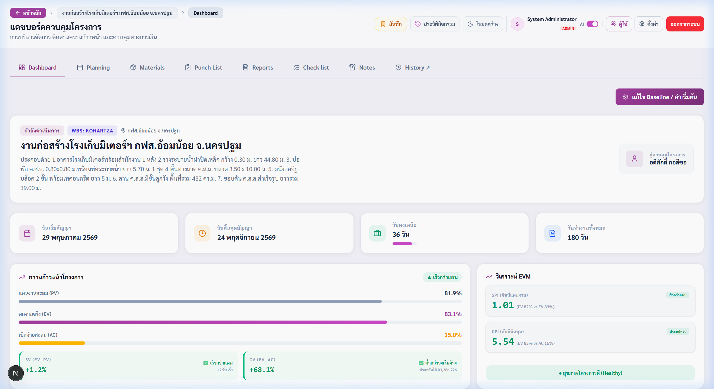
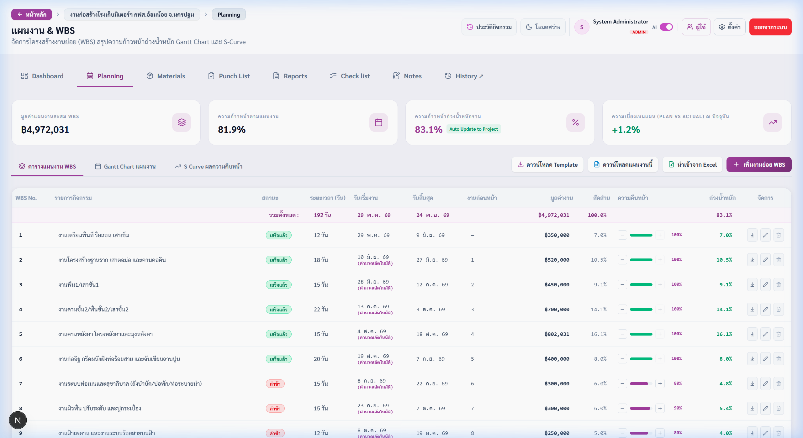
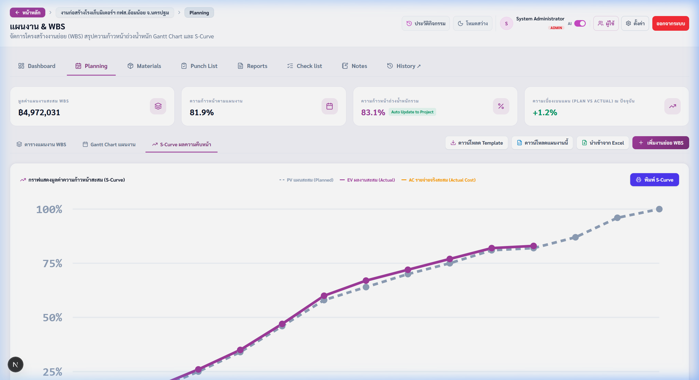
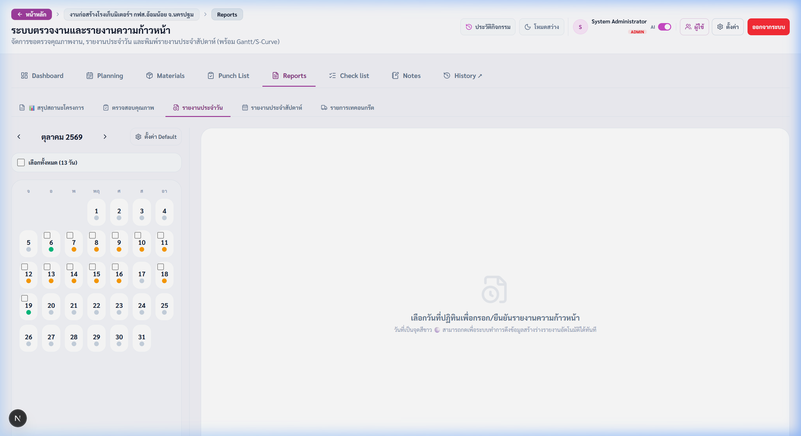
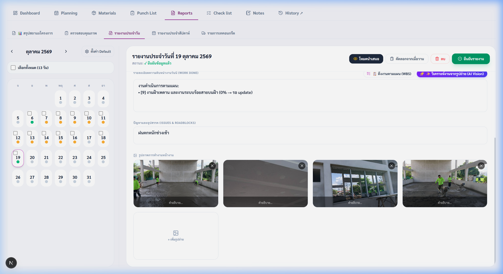
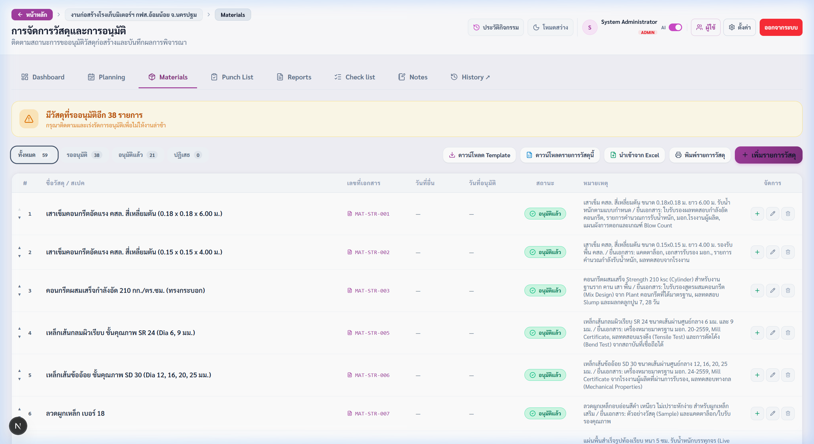
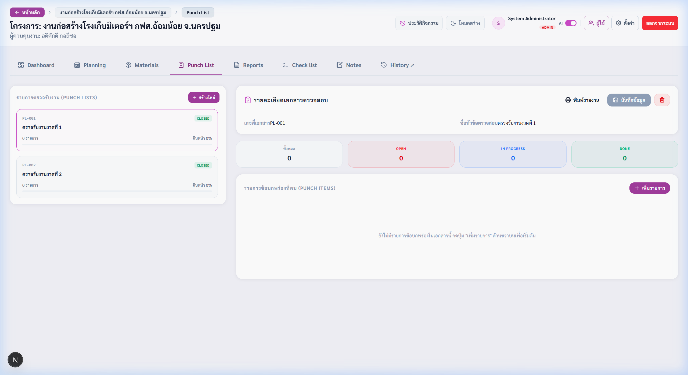
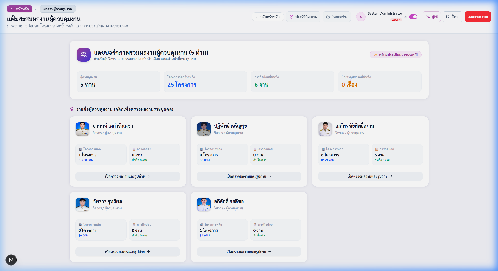

Official Standard Documentation
คู่มือการใช้งานระบบติดตามงานก่อสร้าง
(Construction Project Tracking System)
ระบบบริหารจัดการโครงการ วางแผนงาน WBS กราฟ S-Curve ตรวจสอบและจัดทำรายงานประจำวันอัตโนมัติด้วย AI
ชื่อเอกสาร :
คู่มือผู้ใช้งานระบบ (User Manual) ฉบับสมบูรณ์
ระบบโปรแกรม :
Construction Management & Monitoring Platform
หน่วยงาน / ฝ่าย :
ฝ่ายควบคุมและกำกับการก่อสร้าง / กองวิศวกรรม
ผู้จัดทำ / เรียบเรียง :
ทีมพัฒนาระบบและควบคุมโครงการ
เวอร์ชันของระบบ :
Version 1.2.0 (พร้อมระบบ Quick Progress Stepper & AI Engine)
วันที่จัดทำเอกสาร :
19 ตุลาคม 2569
บทนำและสิทธิ์การใช้งาน (Introduction & Roles)
ระบบติดตามงานก่อสร้าง (Construction Tracking Platform) ถูกออกแบบและพัฒนาขึ้นเพื่อยกระดับการควบคุมงานก่อสร้างให้เป็นระบบดิจิทัลแบบครบวงจร รองรับการทำงานร่วมกันระหว่างผู้บริหาร (Executive), นายช่างผู้ควบคุมงาน (Site Supervisor), ผู้ตรวจสอบ (Inspector) และผู้รับเหมา โดยมุ่งเน้นการบันทึกข้อมูลหน้างานที่สะดวก รวดเร็ว และประมวลผลความคืบหน้าแบบ Real-time
สิทธิ์และบทบาทของผู้ใช้งาน (User Roles)
| บทบาท (Role) |
สิทธิ์การใช้งาน (Permissions) |
กลุ่มผู้ใช้เป้าหมาย |
| Admin |
สิทธิ์สูงสุด: เพิ่ม/ลบโครงการ, จัดการบัญชีผู้ใช้, กำหนดค่าระบบ, อนุมัติข้อมูล |
ผู้ดูแลระบบ, ผู้จัดการโครงการอาวุโส |
| Editor |
บันทึกรายงานประจำวัน, ปรับ WBS และความคืบหน้า, ส่งอนุมัติวัสดุ, บันทึก Defect |
นายช่างผู้ควบคุมงานประจำไซต์ (Supervisor) |
| Viewer |
ดูภาพรวมแดชบอร์ด, ดูรายงานประจำวัน, ดูกราฟ S-Curve, สั่งพิมพ์รายงาน PDF |
ผู้บริหาร, คณะกรรมการตรวจรับ, ลูกค้า |
โครงสร้างสารบัญของคู่มือ
- หมวดที่ 1: การเข้าสู่ระบบและแดชบอร์ดภาพรวมโครงการทั้งหมด
- หมวดที่ 2: แดชบอร์ดรายละเอียดโครงการและข้อมูลสัญญา
- หมวดที่ 3: แผนงาน WBS กราฟ Gantt Chart และเส้น S-Curve พร้อมปุ่มลัดปรับความคืบหน้า [-] / [+]
- หมวดที่ 4: การบันทึกรายงานประจำวันหน้างานและการวิเคราะห์ด้วย AI
- หมวดที่ 5: การขออนุมัติวัสดุและอุปกรณ์ก่อสร้าง (Material Tracking)
- หมวดที่ 6: การตรวจรับงานและรายการข้อบกพร่อง (Checklist & Punch List)
- หมวดที่ 7: แฟ้มผลงานผู้ควบคุมงาน การนำเสนอ และการออกรายงาน PDF
- ภาคผนวก: ตารางสรุปสัญลักษณ์สีสถานะ และคำถามที่พบบ่อย (FAQ)
หมวดที่ 1: การเข้าสู่ระบบ (User Login)
ก่อนเริ่มต้นใช้งานระบบ ผู้ใช้จะต้องทำการยืนยันตัวตนเพื่อเข้าถึงข้อมูลตามสิทธิ์ที่ได้รับมอบหมาย โดยมีขั้นตอนดังนี้:
1
เปิดเว็บเบราว์เซอร์ (Chrome, Edge หรือ Safari) เข้าสู่ URL ของระบบ จากนั้นกรอก ชื่อผู้ใช้งาน (Username) เช่น admin และ รหัสผ่าน (Password)
2
(ทางเลือก) ติ๊กเครื่องหมายถูกที่ช่อง "จดจำการเข้าสู่ระบบ" เพื่อให้ระบบจดจำสถานะการล็อกอินไว้
3
กดปุ่ม เข้าสู่ระบบ หากรหัสผ่านถูกต้อง ระบบจะนำเข้าสู่แดชบอร์ดหลักทันที และแสดงชื่อผู้ใช้พร้อมสิทธิ์ที่มุมบนขวา

ภาพที่ 1: หน้าจอเข้าสู่ระบบ (Login Screen) - แสดงหน้าต่างสำหรับยืนยันตัวตนผู้ใช้งาน
🔍 คลิกเพื่อดูขนาดเต็ม
1.2 แดชบอร์ดภาพรวมโครงการทั้งหมด (Projects Overview)
เมื่อเข้าสู่ระบบแล้วจะพบกับหน้าหลัก (/projects) ซึ่งเป็นศูนย์รวมข้อมูลโครงการทั้งหมดที่กำลังดำเนินการอยู่:
- การ์ดสถิติรวม (KPI Summary Cards): แสดงจำนวนโครงการทั้งหมด, โครงการที่กำลังดำเนินการ, โครงการที่ล่าช้า, โครงการที่แล้วเสร็จ และมูลค่างบประมาณรวม
- แถบค้นหาและตัวกรอง (Search & Filter Bar): พิมพ์ค้นหาตามชื่อโครงการ, ชื่อผู้ควบคุมงาน, สาขา หรือเลือกกรองตามสถานะ
- การจัดกลุ่มงาน (Work Grouping): แสดงรายการโครงการแยกตามหมวดหมู่ หรือสลับมุมมองระหว่างแบบการ์ด (Grid View) และแบบตาราง (Table View)
- ปุ่มทางลัดด้านบน: ปุ่ม 📌 บันทึก (Quick Links), ปุ่ม 🎖️ แฟ้มผลงาน (Supervisors) และปุ่ม + เพิ่มโครงการ

ภาพที่ 2: หน้าแดชบอร์ดภาพรวมโครงการทั้งหมด (Main Projects Overview) - สรุปสถิติและสถานะทุกโครงการ
🔍 คลิกเพื่อดูขนาดเต็ม
หมวดที่ 2: แดชบอร์ดรายละเอียดโครงการ (Project Dashboard)
เมื่อคลิกเลือกโครงการใดโครงการหนึ่งจากหน้าหลัก ระบบจะนำเข้าสู่หน้ารายละเอียดของโครงการนั้น (/projects/[id]):
1
ข้อมูลสัญญาและงบประมาณ: แสดงเลขที่สัญญา, ผู้รับจ้าง, วงเงินงบประมาณ, ยอดเบิกจ่ายแล้ว และค่าปรับรายวัน
2
กำหนดเวลาและการขยายเวลา: แสดงวันเริ่มต้นสัญญา, วันสิ้นสุดเดิม และวันสิ้นสุดหลังการขยายเวลาสัญญา (กรณีมีคำสั่งหยุดงานหรือขยายเวลา)
3
ตารางงวดงานและงวดเงิน (Milestones): สรุปรายละเอียดงวดที่ 1 ถึงงวดสุดท้าย แสดงขอบเขตงาน จำนวนเงิน และสถานะการเบิกจ่าย (จ่ายแล้ว หรือ รอดำเนินการ)

ภาพที่ 3: หน้าแดชบอร์ดโครงการ (Project Dashboard) - สรุปงบประมาณ กำหนดเวลา และตารางงวดงาน
🔍 คลิกเพื่อดูขนาดเต็ม
หมวดที่ 3: แผนงาน WBS และปุ่มลัดปรับความคืบหน้า (Planning)
แท็บ Planning ใช้สำหรับควบคุมกิจกรรมก่อสร้างย่อยตามหลักวิศวกรรม โดยคำนวณวันทำงาน หักวันหยุดราชการ และรองรับความสัมพันธ์ของงานก่อนหน้า (Predecessors) อัตโนมัติ พร้อมปุ่มทางลัดปรับความคืบหน้าในคลิกเดียว:
3.1 ปุ่มลัดเพิ่ม-ลดความคืบหน้า (Quick Progress Stepper: [-] / [+])
- กดปุ่ม [-] เพื่อลดความคืบหน้าลง 10% (ต่ำสุดที่ 0%)
- กดปุ่ม [+] เพื่อเพิ่มความคืบหน้าขึ้น 10% (สูงสุดที่ 100%)
- ระบบปรับปัดเศษอัตโนมัติ: หากความคืบหน้าอยู่ที่ 95% แล้วกด [+] ระบบจะปรับเป็น 100% ทันที ไม่เกินขีดจำกัด
- Real-time Update 0ms: เมื่อกดปุ่ม ตัวเลขแถบเปอร์เซ็นต์, สถานะงาน, ความก้าวหน้าถ่วงน้ำหนักรวมของโครงการ และเส้นกราฟ S-Curve จะขยับเปลี่ยนทันที
- นำเข้าและส่งออก Excel: กดปุ่ม 📥 ดาวน์โหลด Template เพื่อกรอกแล้วนำเข้าผ่านปุ่ม 📤 นำเข้าจาก Excel

ภาพที่ 4: ตาราง WBS - แสดงรายการกิจกรรมย่อย พร้อมปุ่มลัด [-] และ [+] ขนาบข้าง Progress Bar สำหรับปรับเปอร์เซ็นต์งานทันที
🔍 คลิกเพื่อดูขนาดเต็ม
3.2 แผนภูมิ Gantt Chart และกราฟเส้น S-Curve
ช่วยให้นายช่างและผู้บริหารวิเคราะห์ผลการดำเนินงานได้อย่างชัดเจนแบบ Visual Analysis:
- Gantt Chart แผนงาน: แสดงแถบระยะเวลาทำงานของแต่ละกิจกรรม พร้อมเส้น Today Marker แสดงวันที่ปัจจุบัน
- S-Curve ผลความคืบหน้า: แสดงเส้นเปรียบเทียบผลงานจริงสะสม (Actual สีน้ำเงิน) กับแผนงานสะสม (Planned สีเทา)
- ความเบี่ยงเบนแผน (Plan vs Actual): แสดงตัวเลขประเมินความเร็ว/ช้าของโครงการ เช่น -5.2% หากงานล่าช้ากว่าแผน

ภาพที่ 5: หน้ากราฟเปรียบเทียบผลงาน S-Curve และ Gantt Chart - ตรวจสอบความเบี่ยงเบนของแผนงาน (Plan vs Actual)
🔍 คลิกเพื่อดูขนาดเต็ม
หมวดที่ 4: การบันทึกรายงานประจำวันหน้างาน (Daily Reports)
แท็บ Reports ออกแบบมาเพื่อให้นายช่างบันทึกเหตุการณ์ประจำวันได้อย่างครบถ้วนและสะดวกรวดเร็วที่สุด พร้อมระบบ AI ช่วยตรวจจับสภาพอากาศและวิเคราะห์ภาพถ่าย:
1
เลือกวันที่ (Date Selection): คลิกเลือกวันที่ที่ต้องการบันทึกรายงานบนปฏิทิน
2
สภาพอากาศ (Weather): ระบบดึงสภาพอากาศจากดาวเทียมตรวจอากาศอัตโนมัติ (โฟกัสช่วงเวลาปฏิบัติงาน 8:00 - 17:00 น.) หรือสามารถเลือกปรับเปลี่ยนเองได้
3
บันทึกแรงงานและเครื่องจักร: ระบุจำนวนคนงานแยกตามประเภทช่าง และเครื่องจักรที่เข้าทำงานในวันนั้น
4
ผลการปฏิบัติงานและปัญหา: กรอกรายละเอียดงานที่ทำได้ พร้อมระบุปัญหาและแนวทางการแก้ไข

ภาพที่ 6: ปฏิทินบันทึกรายงานประจำวันของโครงการ "งานก่อสร้างโรงเก็บมิเตอร์ฯ กฟส.อ้อมน้อย จ.นครปฐม" แสดงวันที่ที่มีการบันทึกรายงานความก้าวหน้าตลอดเดือน
🔍 คลิกเพื่อดูขนาดเต็ม
4.2 การอัปโหลดรูปภาพและการใช้ AI วิเคราะห์ภาพไซต์งาน
ระบบผสานเทคโนโลยี AI Vision ในการวิเคราะห์ภาพถ่ายจากหน้างานก่อสร้างอัตโนมัติ:
1
กดปุ่ม 📷 แนบรูปภาพหน้างาน เพื่ออัปโหลดภาพถ่ายจากโทรศัพท์มือถือหรือคอมพิวเตอร์
2
ระบบ AI วิเคราะห์ภาพ: ระบบจะประมวลผลรูปภาพเพื่อตรวจนับจำนวนคนงาน, อุปกรณ์ความปลอดภัย (PPE), เครื่องจักร และสรุปข้อความให้โดยอัตโนมัติ
3
กดปุ่ม 💾 บันทึกรายงาน ข้อมูลจะถูกจัดเก็บเข้าสู่ฐานข้อมูลและส่งแจ้งเตือนสรุปประจำวันเข้ากลุ่ม LINE อัตโนมัติ

ภาพที่ 7: รายละเอียดรายงานประจำวัน (19 ต.ค. 2569) แสดงสภาพอากาศ งานดำเนินการตามแผน [9] และรูปถ่ายจริงหน้างาน 4 ภาพ (ขัดพื้น คสล., ติดตั้งฝ้า และบานหน้าต่าง)
🔍 คลิกเพื่อดูขนาดเต็ม
หมวดที่ 5: การขออนุมัติวัสดุ (Material Tracking)
แท็บ Materials ใช้สำหรับจัดทำทะเบียนขออนุมัติวัสดุก่อสร้าง (Material Approval Submittal) เพื่อควบคุมคุณภาพวัสดุตามข้อกำหนดของสัญญา:
| สถานะวัสดุ |
สีสัญลักษณ์ |
ความหมายและการดำเนินการต่อ |
| รอการพิจารณา | Pending | เอกสารอยู่ระหว่างการตรวจสอบโดยผู้ควบคุมงานหรือวิศวกร |
| อนุมัติ (Approved) | Approved | ผ่านการอนุมัติ สามารถสั่งซื้อและนำเข้าติดตั้งในโครงการได้ |
| อนุมัติแบบมีเงื่อนไข | Condition | อนุมัติให้นำเข้าได้ แต่ต้องส่งเอกสารผลทดสอบหน้างานเพิ่มเติม |
| ส่งกลับแก้ไข / ไม่อนุมัติ | Rejected | ไม่เป็นไปตามสเปก ต้องส่งตัวอย่างหรือเอกสารใหม่ |

ภาพที่ 8: ตารางทะเบียนขออนุมัติวัสดุ (Materials Approval Submittal) - ติดตามสถานะและเอกสารรับรอง
🔍 คลิกเพื่อดูขนาดเต็ม
หมวดที่ 6: การตรวจรับงานและข้อบกพร่อง (Checklist & Punch List)
ควบคุมคุณภาพงานช่าง (Quality Control) และติดตามจุดบกพร่องก่อนส่งมอบงาน:
1
แบบตรวจรับงาน (Checklist): ตรวจงานตามขั้นตอนมาตรฐาน ติ๊กผล ผ่าน หรือ ไม่ผ่าน
2
เปิดรายการบกพร่อง (Punch List): ระบุชื่องาน ตำแหน่งห้อง/ชั้น และแนบรูปภาพก่อนแก้ไข (Before)
3
ตรวจรับงานแก้ไข (After): เมื่อแก้ไขเสร็จ อัปโหลดภาพหลังแก้ไขเพื่อตรวจสอบเปรียบเทียบ และกดยืนยันปิดรายการ

ภาพที่ 9: หน้าติดตามรายการบกพร่อง (Punch List) - แสดงตำแหน่ง ระดับความเร่งด่วน และรูป Before/After
🔍 คลิกเพื่อดูขนาดเต็ม
หมวดที่ 7: แฟ้มผลงานผู้คุมงานและการออกรายงาน
เครื่องมืออำนวยความสะดวกสำหรับผู้บริหารและผู้ควบคุมงาน ในการนำเสนอผลงานและพิมพ์รายงาน:
- แฟ้มประวัติรายบุคคล: แสดงข้อมูลความคุมงานของช่างแต่ละท่าน, โครงการที่กำลังรับผิดชอบ, ภารกิจย่อยเฉพาะกิจ และบันทึกผลงานเด่น
- ปุ่มสั่งพิมพ์แฟ้มผลงาน: กดปุ่ม 🖨️ พิมพ์แฟ้มผลงาน เพื่อพิมพ์เอกสารสรุปผลงานประกอบการประเมินเลื่อนขั้น/ผลงานประจำปี (KPI Appraisal) ได้ทันที
- พิมพ์รายงานประจำวัน (Daily Report PDF): เลือกวันที่แล้วกดปุ่ม 🖨️ พิมพ์รายงาน เพื่อเซฟเป็น PDF A4
- โหมดการนำเสนอ (Presentation Mode): สไลด์สรุปสำหรับที่ประชุมผู้บริหารแบบ Full Screen

ภาพที่ 10: หน้าแฟ้มผลงานผู้ควบคุมงาน (Supervisor Portfolio) - ติดตาม KPI สรุปผลงานรายบุคคล
🔍 คลิกเพื่อดูขนาดเต็ม
ภาคผนวก: สรุปสถานะและคำถามพบบ่อย (FAQ)
ตารางสรุปความหมายของแถบสถานะ (Status Reference)
| สัญลักษณ์ / สี |
สถานะที่แสดง |
คำอธิบายการประเมินผล |
| เสร็จแล้ว (Completed) | ความคืบหน้า 100% | งานเสร็จสมบูรณ์เรียบร้อยแล้ว |
| กำลังดำเนินการ | Actual ตามทันแผนงาน | ผลงานจริงเป็นไปตามแผนงานที่กำหนดไว้ |
| ล่าช้า (Delayed) | Actual ต่ำกว่าแผน > 5% | งานล่าช้ากว่าแผน ต้องเร่งรัดหรือมีแผนแก้ไข |
| ในอนาคต (Upcoming) | ยังไม่ถึงวันเริ่มงาน | งานตามแผนงานที่รอเริ่มตามกำหนดเวลา |
| หยุดงาน / พักงาน | Suspension Period | ช่วงเวลาหยุดงานตามคำสั่งขยายเวลาสัญญา |
คำถามที่พบบ่อย (Frequently Asked Questions - FAQ)
Q1: กดปุ่ม [+] ใน WBS แล้วตัวเลขขึ้นทันทีเลยหรือไม่ ต้องกดเซฟอีกไหม?
A: ขึ้นทันทีครับ ระบบมีระบบ Optimistic Update ทำให้ตัวเลข กราฟ และสถานะเปลี่ยนใน 0 วินาที และระบบจะบันทึกลงฐานข้อมูลในพื้นหลังให้อัตโนมัติทันที
Q2: หากวันนั้นฝนตกหนักจนทำงานไม่ได้ ต้องบันทึกอย่างไร?
A: ในแท็บ Reports ให้เลือกสภาพอากาศเป็น "ฝนตกหนัก" และระบุเวลาที่ฝนตกในช่องปัญหาเพื่อใช้เป็นหลักฐานขอขยายสัญญา
Q3: ผู้ใช้งานลืมรหัสผ่านต้องทำอย่างไร?
A: ติดต่อผู้ดูแลระบบ (Admin) เพื่อดูรหัสผ่านหรือขอรีเซ็ตรหัสผ่านใหม่จากหน้าจัดการผู้ใช้งาน (/admin/users)
Q4: การนำเข้าแผนงานจาก Excel ทำไมบางแถวแสดงวันที่ไม่ตรง?
A: ตรวจสอบคอลัมน์ "งานก่อนหน้า" (Predecessors) หากใส่เลข WBS ระบบจะคำนวณวันเริ่มต้นต่อจากงานก่อนหน้าโดยอัตโนมัติ หักวันหยุดราชการให้เรียบร้อย